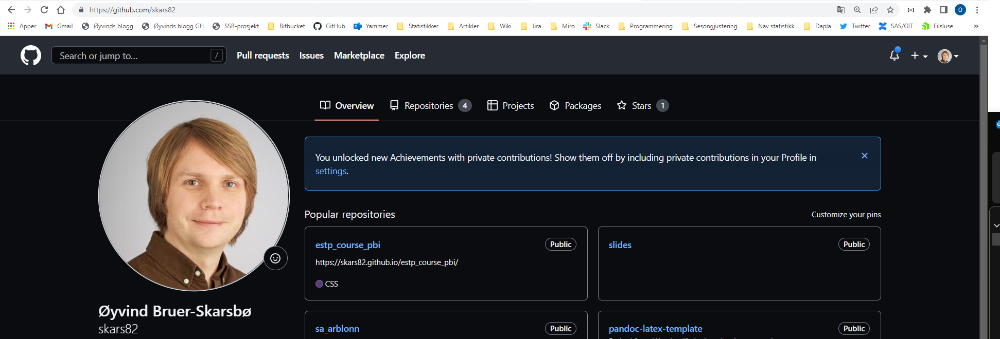
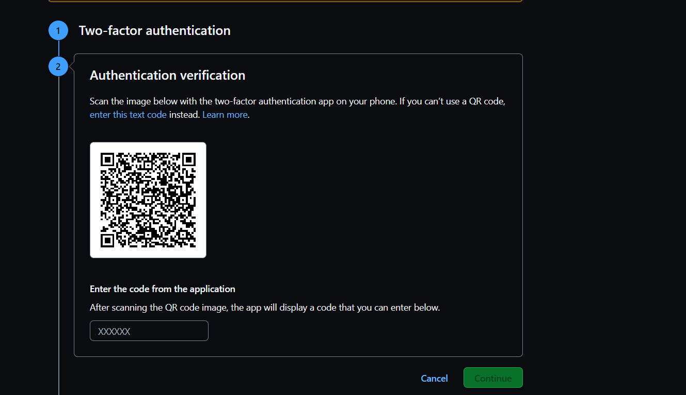
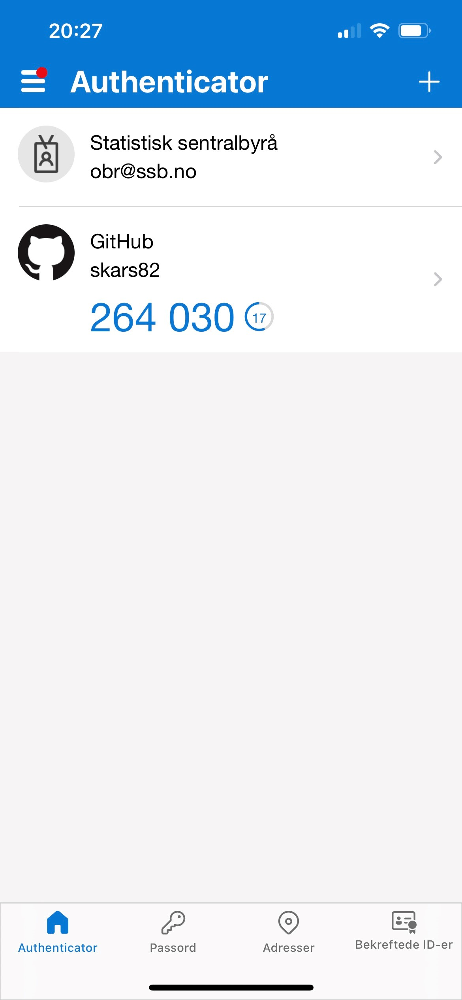
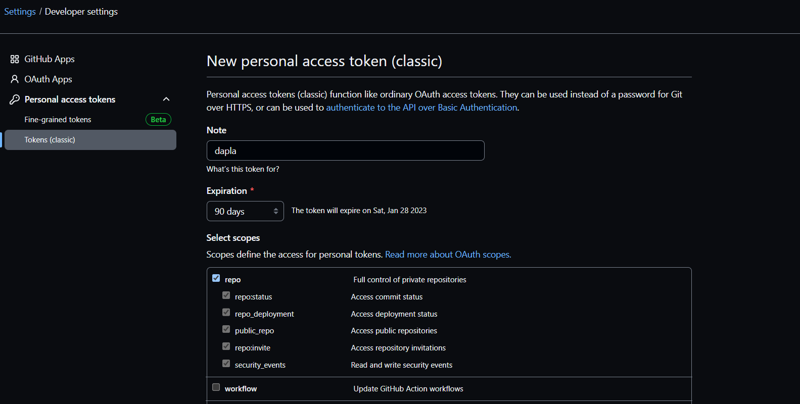
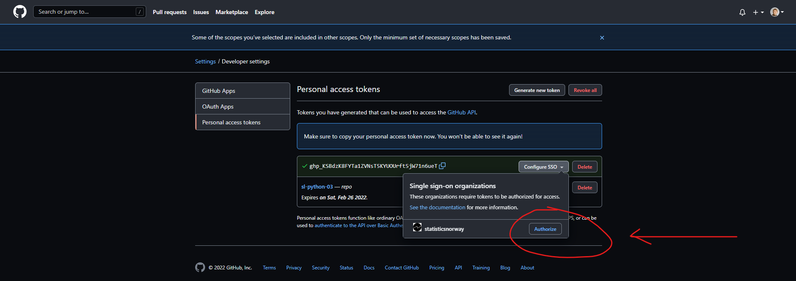

17 Git og Github
I SSB anbefales det man versjonhåndterer koden sin med Git og deler koden via GitHub. For å lære seg å bruke disse verktøyene på en god måte er det derfor viktig å forstå forskjellen mellom Git og Github. Helt overordnet er forskjellen følgende:
- Git er programvare som er installert på maskinen du jobber på og som sporer endringer i koden din.
- GitHub er et slags felles mappesystem på internett som lar deg dele og samarbeide med andre om kode.
Av definisjonene over så skjønner vi at det er Git som gir oss all funksjonalitet for å lagre versjoner av koden vår. GitHub er mer som et valg av mappesystem. Men måten kodemiljøene våre er satt opp på Dapla så har vi ingen fellesmappe som alle kan kjøre koden fra. Man utvikler kode i sin egen hjemmemappe, som bare du har tilgang til, og når du skal samarbeide med andre, så må du sende koden til GitHub. De du samarbeider med må deretter hente ned denne koden før de kan kjøre den.
I dette kapitlet ser vi nærmere på Git og Github og hvordan de er implementert i SSB. Selv om SSB har laget programmet ssb-project for å gjøre det lettere å bl.a. forholde seg til Git og GitHub, så vil vi dette kapitlet forklare nærmere hvordan det funker uten dette hjelpemiddelet. Forhåpentligvis vil det gjøre det lettere å håndtere mer kompliserte situasjoner som oppstår i arbeidshverdagen som statistikker.
17.1 Git
Git er terminalprogram som installert på maskinen du jobber. Hvis man ikke liker å bruke terminalen finnes det mange pek-og-klikk versjoner av Git, blant annet i Jupyterlab, SAS EG og RStudio. Men typisk vil det en eller annen gang oppstå situasjoner der det ikke finnes løsninger i pek-og-klikk versjonen, og man må ordne opp i terminalen. Av den grunn velger vi her å fokusere på hvordan Git fungerer fra terminalen. Vi vil også fokusere på hvordan Git fungerer fra terminalen i Jupyterlab på Dapla.
17.1.1 Hva er Git?
Kommer snart. Kort forklaring med lenke til mer utfyllende svar.
17.1.2 Oppsett av Git
Mer kommer.
17.1.2.1 Minimal Git-konfigurasjon
For å brukt Git er det strengt tatt to ting som må konfigurere:
- Brukernavn
- E-post
Denne informasjonen brukes av Git hver gang du sjekker inn en endring i koden slik at man kan vite hvem som gjorde endringen senere. Dette må settes én gang per miljø hvor du skal jobbe med Git. Hvis du f.eks. jobber i Jupyterlab på Dapla så kan du åpne en terminal og skrive følgende for å lagre ditt brukernavn:
git config --global user.name "Ola Nordmann"
For å sette e-post gjør du veldig lignende:
git config --global user.email olanordamnn@ssb.no
Når du har kjørt disse to kommandoene så kan du bruke Git. Informasjonen du la til over brukes ikke til noe annet enn å fortelle de du samarbeider med om at du har gjort endringer på koden. Den er verken knyttet opp mot din SSB-bruker eller din GitHub-bruker.
17.1.3 Git og Notebooks
Kommer snart. Jupytext og nbsripout. json.
17.1.4 Vanlige Git-operasjoner
Kommer snart. clone, add, commit, push, pull, merge, revert, etc.
17.2 GitHub
17.2.1 Opprett GitHub-bruker
Dette kapitlet er bare relevant hvis man ikke har en GitHub-brukerkonto fra før. For å bruke ssb-project-programmet til å generere et remote repo på GitHub må du ha en konto. Derfor starter vi med å gjøre dette. Det er en engangsjobb og du trenger aldri gjøre det igjen.
SSB har valgt å ikke sette opp SSB-brukerne til de ansatte som GitHub-brukere. En viktig årsak er at er en GitHub-konto ofte regnes som en del av den ansattes CV. For de som aldri har brukt GitHub før kan det virke fremmed, men det er nok en fordel på sikt når alle blir godt kjent med denne arbeidsformen.
Slik gjør du det:
- Gå til https://github.com/
- Trykk Sign up øverst i høyre hjørne
- Svar på spørsmålene du blir stilt.
Husk at du lager en personlig konto uavhengig av SSB. Brukernavnet kan være noe annet enn brukernavnet ditt i SSB. I neste steg skal vi knytte denne kontoen til din SSB-bruker.
17.2.2 To-faktor autentifisering
Hvis du har fullført forrige steg så har du nå en GitHub-konto. Hvis du står på din profil-side så ser den slik ut:

Det neste vi må gjøre er å aktivere 2-faktor autentifisering, siden det er dette som benyttes i SSB. Hvis du står på siden i bildet over, så gjør du følgende for å aktivere 2-faktor autentifisering mot GitHub:
Trykk på den lille pilen øverst til høyre og velg Settings(se bilde til høyre).
Deretter velger du Password and authentification i menyen til venstre.

- Under Two-factor authentication trykker du på Add. Da får du opp følgende bilde:

Strekkoden over skal skannes i din Microsoft Authenticator-app på mobilen. Åpne appen, trykk på Bekreftede ID-er, og til slutt trykk på Skann QR-kode. Deretter skanner du QR-koden fra punkt 3.
Når koden er skannet har du fått opp følgende bilde på appens hovedside (se bilde til høyre). Skriv inn den 6-siffer koden på GitHub-siden med QR-koden.
Til slutt lagrer du Recovery-codes et trygt sted.

Nå har vi aktivert 2-faktor autentifisering for GitHub og er klare til å knytte vår personlige konto til vår SSB-bruker på SSBs “Github organisation” statisticsnorway.
17.2.3 Koble deg til SSB
I forrige steg aktiverte vi 2-faktor autentifisering for GitHub. Det neste vi må gjøre er å bruke denne autentiseringen til å koble oss til SSB sin organisasjon statisticsnorway. Det er dette som gjør at vi kan jobbe med SSB-kode som ligger lagret på GitHub.
Gå til profilsiden din og velg Settings slik du gjorde i punkt 1 i forrige delkapitel.
Trykk deretter på Organizations i menyen til venstre.
Trykk deretter på New organization.
Søk etter statisticsnorway.
17.2.4 Personal Access Token (PAT)
Når vi skal jobbe med SSB-kode som ligger lagret hos statistcsnorway på GitHub, så må vi autentisere oss. Måten vi gjøre det på er ved å generere et Personal Access Token (ofte forkortet PAT) som vi oppgir når vi vil hente eller oppdatere kode på GitHub. Da sender vi med PAT for å autentisere oss for GitHub.
17.2.4.1 Opprette PAT
For å lage en PAT som er godkjent mot statisticsnorway så gjør man følgende:
Gå til din profilside på GitHub og åpne Settings slik som ble vist Section 17.2.2.
Velg Developer Settings i menyen til venstre.
I menyen til venstre velger du Personal Access Token, og deretter Tokens (classic).
Under Note kan du gi PAT’en et navn. Velg et navn som er intuitivt for deg. Hvis du skal bruke PAT til å jobbe mot Dapla, så ville jeg ganske enkelt kalt den dapla. Hvis du skal bruke den mot bakkemiljøet ville jeg kalt den prodsone eller noe annet som gjør det lett for det skjønne innholdet i ettertid.
Under Expiration velger du hvor lang tid som skal gå før PAT blir ugyldig. Dette er en avvening mellom sikkerhet og hva som er praktisk. En grei mellomløsning kan være å velge 3 måneder. Når PAT utløper må du gjenta stegene i dette kapitlet.
Under Select scopes velger du Repo (se bilde under).

- Trykk på Generate token nederst på siden og du får opp noe som ser ut som dette:

Kopier deretter PAT til en midlertidig fil. Grunnen er at du aldri vil se det igjen her etter at vi har gjennomført neste steg.
Deretter trykker du på Configure SSO og velger Authorize ved siden statisticsnorway. Svar deretter på spørsmålene som dukker opp.

Vi har nå opprettet en PAT som er godkjent for bruk mot SSB sin kode på GitHub. Det betyr at hvis vi vil jobbe med Git på SSB sine maskiner i sky eller på bakken, så må vi sendte med dette tokenet for å få lov til å jobbe med koden som ligger på statisticsnorway på GitHub.
17.2.4.2 Lagre PAT
Det er ganske upraktisk å måtte sende med tokenet hver gang vi skal jobbe med GitHub. Vi bør derfor lagre det lokalt der vi jobber, slik at Git automatisk finner det. Det finnes mange måter å gjøre dette på og det er ikke bestemt hva som skal være beste-praksis i SSB. Men en måte å gjøre det er via en .netrc-fil. Vi oppretter da en fil som heter .netrc på vårt hjemmeområde, og legger følgende informasjon på en (hvilken som helst) linje i filen:
machine github.com login <github-bruker> password <Personal Access Token>
GitHub-bruker er da din personlige bruker og IKKE brukernavnet ditt i SSB. Personal Access Token er det vi lagde
En veldig enkel måte å lagre dette er som følger. Anta at min personlige GitHub-bruker er SSB-Chad og at min Personal Access Token er blablabla. Da kan jeg gjøre følgende for å lagre det i .netrc:
Gå inn i Jupyterlab og åpne en Python-notebook.
I den første kodecellen skriver du:
!echo "machine github.com login SSB-Chad password blablabla" >> ~/.netrc
Alternativt kan du droppe det utropstegnet og kjøre det direkte i en terminal. Det vil gi samme resultat. Koden over legger til en linje med teksten machine github.com login SSB-Chad password blablabla i en .netrc-fil på din hjemmeområdet, uanvhengig av om du har en fra før eller ikke. Hvis du har en fil fra før som allerede har et token fra GitHub, ville jeg nok slettet det før jeg legger en et nytt token.
Hver gang du jobber mot GitHub vil Git sjekke om informasjon om autentifisering ligger i denne filen, og bruke den hvis den ligger der.
17.2.4.3 Oppdater PAT
I eksempelet over lagde vi en PAT som var gyldig i 90 dager. Dermed vil du ikke kunne jobbe mot GitHub med dette tokenet etter 90 dager. For å oppdatere tokenet gjør du følgende:
Lag et nytt PAT ved å repetere Section 17.2.4.1.
I miljøet der du skal jobbe med Git og GitHub går du inn i din .netrc og bytter ut token med det nye.
Og med det er du klar til å jobbe mot statisticsnorway på GitHub.